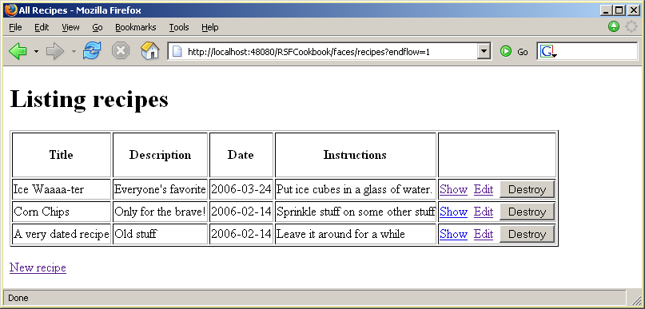

We are currently working on the "basic" Cookbook app that lets us manipulate lists of Recipe objects in a straightforward CRUD application. As in Ruby on Rails, RSF features a "scaffold" system where apps of this type can be automatically generated based purely on ORM information, in this case stored in the .hbm file. However, since right now we are explaining the RSF approach to ORM itself, it's worthwhile to build this app by hand to start with so you can see how this works in simple cases.
List view#
Let's first build the "list" view. It's much easier to first see the "picture on the box", so here is what the completed view will look like:|  |
HTML template#
One of the central benefits of RSF is its HTML templating system, so let's start by designing the appearance of this web page first in pure HTML (as you probably would in real life). In other frameworks this would just be a "mockup" of the UI, whereas using RSF (with IKAT) it is virtually "ready to eat" - just liberally sprinkle with rsf:id attributes. All of the components here are simple leaf components, except for the one that represents the table row, which will need to be repeated in the final view. As you may recall from the Number Guessing app where we met tables for the first time, you present repeating (or otherwise dynamically resolved) components to the IKAT renderer by giving them IDs containing the colon character, in this case for recipe-row:. Other than these rsf:ids, the template is pure XHTML, and will preview in any browser. Note that you will need to be more careful about authoring these templates than with HTML, since XML does not permit any sloppiness with unbalanced tags or incorrect cases.
first in pure HTML (as you probably would in real life). In other frameworks this would just be a "mockup" of the UI, whereas using RSF (with IKAT) it is virtually "ready to eat" - just liberally sprinkle with rsf:id attributes. All of the components here are simple leaf components, except for the one that represents the table row, which will need to be repeated in the final view. As you may recall from the Number Guessing app where we met tables for the first time, you present repeating (or otherwise dynamically resolved) components to the IKAT renderer by giving them IDs containing the colon character, in this case for recipe-row:. Other than these rsf:ids, the template is pure XHTML, and will preview in any browser. Note that you will need to be more careful about authoring these templates than with HTML, since XML does not permit any sloppiness with unbalanced tags or incorrect cases.
<!DOCTYPE html PUBLIC "-//W3C//DTD XHTML 1.0 Transitional//EN"
"http://www.w3.org/TR/xhtml1/DTD/xhtml1-transitional.dtd">
<html xmlns:rsf="http://ponder.org.uk/rsf">
<head>
<title>All Recipes</title>
</head>
<body>
<h1>Listing recipes</h1>
<form rsf:id="basic-form" method="post">
<table border="1">
<tr>
<td><p align="center"><b>Title</b></p></td>
<td><p align="center"><b>Description</b></p></td>
<td><p align="center"><b>Date</b></p></td>
<td><p align="center"><b>Instructions</b></p></td>
<td><p align="center"></p></td>
</tr>
<tr rsf:id="recipe-row:">
<td rsf:id="recipe-title">Hot Chips</td>
<td rsf:id="recipe-description">Only for the brave!</td>
<td rsf:id="recipe-date">2004-11-11</td>
<td rsf:id="recipe-instructions">Sprinkle hot-pepper sauce on corn chips</td>
<td><a href="recipe-show.html" rsf:id="recipe-show">Show</a>
<a href="recipe-edit.html" rsf:id="recipe-edit">Edit</a>
<input type="submit" rsf:id="recipe-destroy" value="Destroy"/>
</td>
</tr>
</table>
<p><a href="recipe-edit.html" rsf:id="recipe-create">New recipe</a></p>
</form>
</body>
</html>
Component tree#
Now lets turn to the component tree that will back this view at request-time. Here and in the next few pages we will develop this in the XML style - turn to the final page to see how this is rendered in Java.
It's clear that to generate the runtime view we will need to cause some kind of replication in the view tree, based on the results from a request-time query that we issue through Hibernate. In Java this would be achieved through simple looping, but in XML must be specified declaratively. We previously met the UIReplicator component in the last page of the Number Guessing sample, where we built up the table of previous guesses row by row.
The driving force behind the replicator is the EL reference held in the valuebinding field - this is a reference which should resolve (at request-time) to a List of Java objects, which will drive the iteration and replication of components - one instance of the component held in the component field of the replicator will be generated for each list members. The only extra "magic" required is some jiggery with EL references and ViewParameters in the replicating component that will refer to the specific entity being replicated. Using the "One True Path" philosophy of RSF, you must make EL references to entities (in this case Recipes) at their base path which is of the form #{Recipe.id.field} . Therefore whenever you try to fetch fields of the Recipe for each row, the prefix of the EL must be rewritten to locate each successive Recipe's fields.
This is clearer with the example in view - here are the first few lines from the component tree for this view:
<?xml version="1.0" encoding="UTF-8"?>
<view>
<component type="form" id="basic-form">
<component type="replicator" id="reciperep">
<valuebinding>#{recipes-all}</valuebinding>
<idstrategy type="idremap" basepath="#{Recipe}" />
<component type="branchcontainer" id="recipe-row:">
<component type="output" id="recipe-title">
<valuebinding>#{*.title}</valuebinding>
</component>
Query bean reference#
So, as the first replicator field, the recipe is being driven by the list held at #{recipes-all} . Looking into this application's requestContext.xml, we can see this is defined to be an HQL query bean (a standard bean supplied as part of RSF's Hibernate integration library} as follows:
<!-- A simple "DAO" return all entities of type Recipe -->
<bean id="recipes-all" parent="HQLQuery">
<property name="HQLString" value="from Recipe"/>
</bean>
This uses the standard Spring "parent bean" definition syntax which you can refresh your knowledge of in the Spring documentation - although it is worth remembering that the request context is not being operated by Spring code but by RSAC, and you should not expect all Spring syntax to be valid. More and more will be supported as time goes on.
ID remapping#
Returning to the Replicator, the next line defines our ID remapping strategy:
<idstrategy type="idremap" basepath="#{Recipe}" />
This line is necessary as a result of RSF's "One True Path" model. The list of beans we are iterating over has EL paths of the form #{recipes-all.1} , #{recipes-all.2} , etc., but when any user submission from this page is processed, we cannot use these references since it would mean re-executing the query! To avoid this efficiency risk, the EL references are rewritten at source by the Replicator, by a rule encoded by this ID remapping strategy [1]. The "idremap" strategy is appropriate for ORM models - it will replace the "ID wildcard" character (by default *) where it appears in EL paths or other references inside this replicator, with the base path #{Recipe} followed by the ID field (by default id) held in the list member.
Replication target#
The final argument to UIReplicator is the chunk of components (held in a UIBranchContainer) that needs replicating. These can mention EL references starting with the special wildcard character *, for example as we see above #{*.title} , which will be rewritten to OTP path of the entity, for example #{Recipe.2.title} . In order to create links to pages centred on the ID, you can also use the * character in encoded ViewParameters objects. For example, this prototoype
<component type="internallink" id="recipe-show">
<viewparams>/recipe-show/*</viewparams>
</component>
will be expanded to links that link to the view parameters encoded by /recipe-show/2, for example.
The final section of the view definition is a non-component, <defaultview>true</defaultview>, specifying that this is the default view for our application - that is, any unknown view requests or other first-level errors will issue a client redirect to this view.
the definition for UIReplicator here, and (for the strong of stomach) the code for TemplateExpander here.
NB that IDStrategy is not an interface since the only two examples of it (DirectIndexStrategy and IDRemapStrategy) work in such startingly different ways that it was thought best just to fold the code straight into TemplateExpander...
Head - Hibernate Cookbook
Page 1 - Query beans, templates and views
Page 2 - Switches, Replicators and transit beans
Page 3 - The main app - entity selectors and Javascript
Page 4 - Let's hear that one more time - this time in Java
Add new attachment
List of attachments
| Kind | Attachment Name | Size | Version | Date Modified | Author | Change note |
|---|---|---|---|---|---|---|
png |
cookbook-basic-recipe-list.png | 22.6 kB | 2 | 19-Jul-2006 09:36 | AntranigBasman |
{kind=link}
{kind=link}
Documentation
Developers
Javadocs
Designers
Sample RSF Apps
Presentations
Acronyms
Downloads
Current Release
Trunk
Distributions
Old Versions
Community
Q&A
Forums
Mailing Lists
Issue Tracker
People
Design
Roadmap
Integrations
Concepts
Philosophy